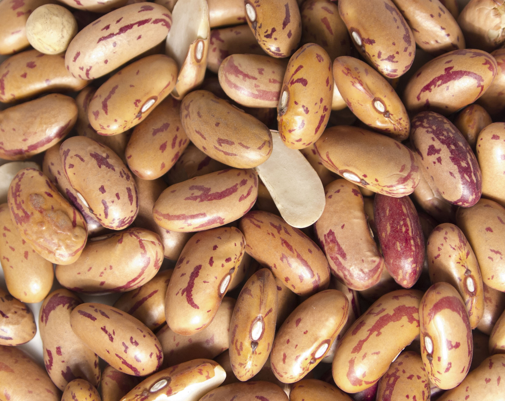

Tarragon Chicken & Borlotti Beans

Description
This high protein, ultra-healthy dish is guaranteed to fill you up and leave you full of beans!
Using juicy chicken thighs, fresh tarragon and thyme, and a squeeze of lemon, you will create a family favourite that is delicious at any time of the year.
PRO TIP: removing the chicken while cooking the beans will keep the chicken tight and chewy for those who like to gnaw it from the bone - just make sure the chicken is cooked through and add back to the pan at the end to warm through. Leave the chicken in the pan if you like the flesh tender and falling off the bone.
Ingredients
- Skin-on chicken thighs - 4
- Lemon - juice of half
- Fresh thyme - the leaves from 6 stems
- Tarragon - a handful of chopped leaves
- Borlotti beans - two 450g cans, drained and rinsed well
- Chestnut mushrooms - 250g, quartered
- Chicken stock - 250ml
- Salt and pepper
- Olive oil - a couple of tablespoons
Instructions
- Pat the chicken thighs dry and season well all over with the salt and pepper.
- Heat the olive oil in a large, high-sided frying pan.
- Carefully add the chicken thighs to the pan, skin down and cook until the skin is crispy and golden brown. Turn over and cook the underside until it is golden brown and crispy too. Once cooked, make sure the skin side is facing up.
- Add the quartered mushrooms and cook in the chicken juices for 5 minutes.
- Add the drained beans, lemon juice, thyme leaves, and chicken stock. Cover and simmer for 30 minutes.
- Add the tarragon leaves. Stir through and cook for another five minutes.
- Serve the chicken thighs on top of a bed of borlotti beans.